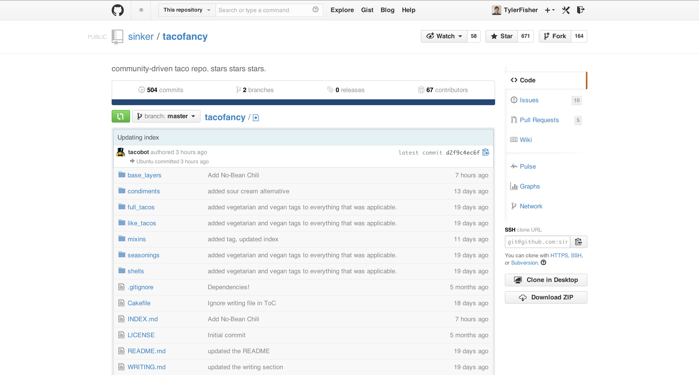
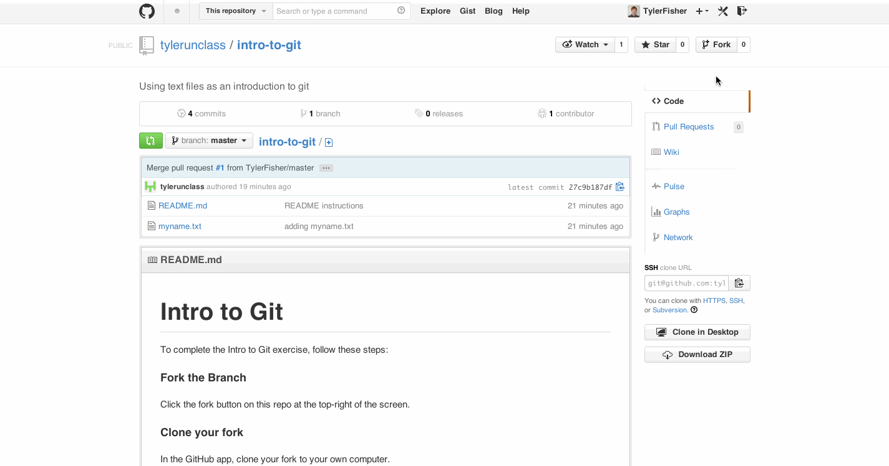
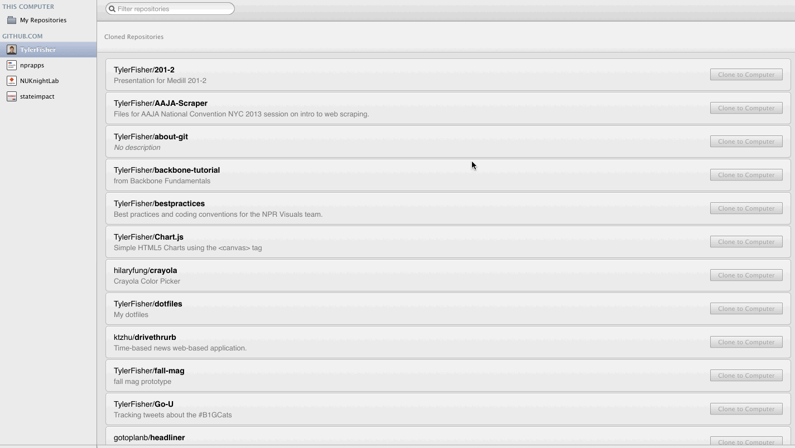
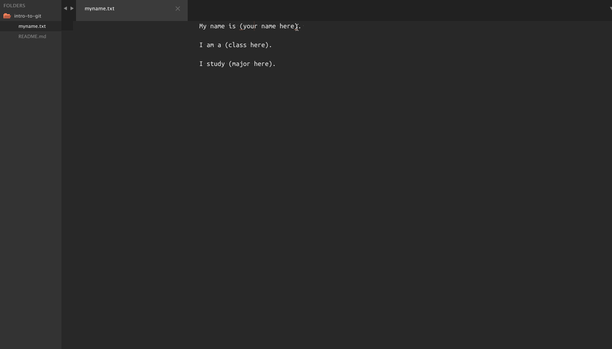
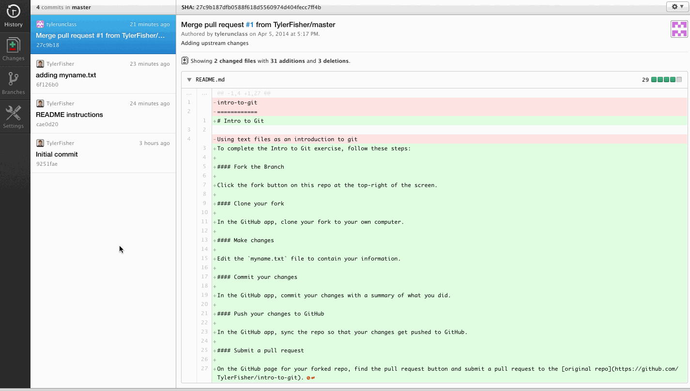
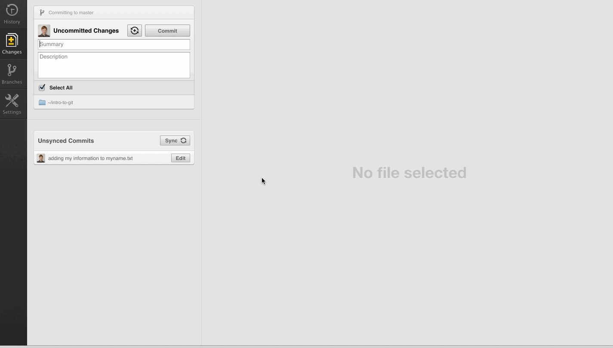
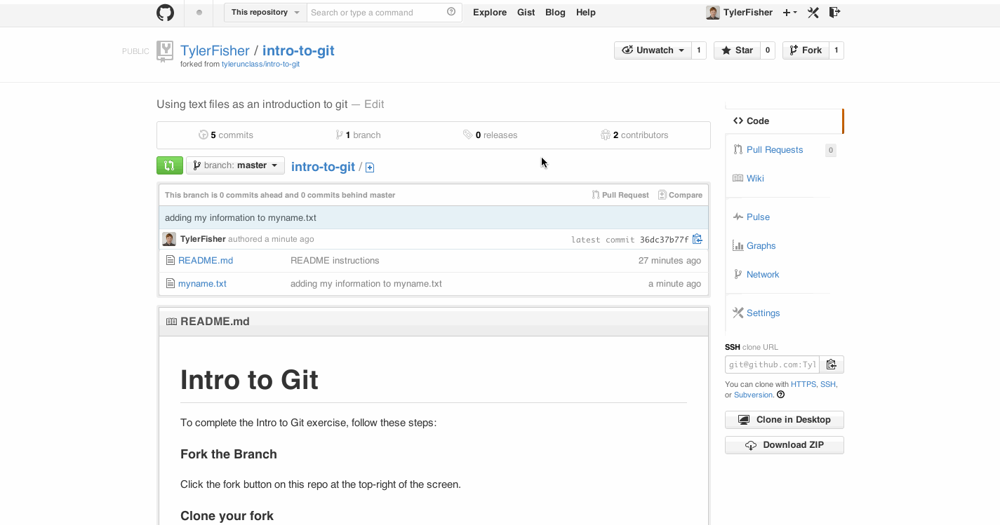

GitHub stores git repositories of text files and records a history of changes to those files.
GitHub stores git repositories of text files and records a history of changes to those files.
GitHub is built off of git, a version control system.
Tacofancy

Git repositories are just folders with files in them.
GitHub stores copies of git repositories on its servers and makes git look pretty.
GitHub stores git repositories of text files and records a history of changes to those files.
Binary Files vs. Text Files
Text files only contain the binary code for text.
All the code you write will be in a text file.
GitHub stores git repositories of text files and records a history of changes to those files.
Git knows how to read text.
Git can show you what changed in a file.
This is called a diff.
Over time, we can see a history of everything that happened in a repository.
GitHub stores git repositories of text files and records a history of changes to those files.
Okay, How?
We're going to use bit.ly/unclass-git
Five verbs of git
- Fork
- Clone/Pull
- Commit
- Push
- Submit (a pull request)
- Fork
- To copy a repository from a user's GitHub account to your own GitHub account.

- Clone
- To copy an entire repository from GitHub to your local computer
- Pull
- To copy the most recent changes to a repository from Github to your local computer

Make changes

- Commit
- To add and describe changes of files to a repository

- Push
- To send commits made locally to GitHub's servers

- Submit a pull request
- To ask the owner of the original repository to merge changes from your forked repository into the original repository.

Your assignment
- Fork the repo
- Clone from the GitHub app
- Make changes to myname.txt
- Commit and push your changes
- Submit a pull request